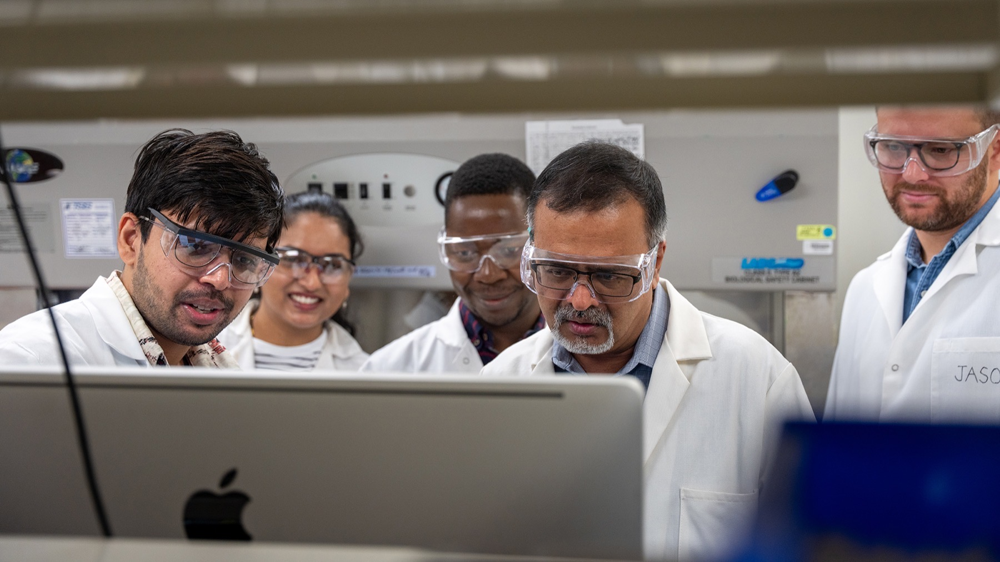

Engineering our understanding of the gut microbiome
We advance knowledge of — and build technologies around — the gut microbiome using microfluidic, molecular, cell culture, and computational methods. Our work spans microbiome–host interactions, inflammatory diseases, and drug discovery.

How microbes communicate with each other, with us, and with the world around them
Interkingdom Signaling & Chemotaxis
How signals like indole, AI-2, and norepinephrine steer bacterial chemotaxis, biofilms, and virulence, and how they strengthen the gut barrier.
Selected work →Microbiota Metabolites & Host Health
How tryptophan- and flavonoid-derived metabolites, often acting through the aryl hydrocarbon receptor, shape colon health and cancer, fatty liver disease, and immunity.
Selected work →Microfluidic & Computational Models
Gut- and tumor-on-a-chip and droplet microfluidic platforms, together with mechanistic, machine-learning, and statistical models of host–microbe systems.
Selected work →Microbial Corrosion & Materials
Microbiologically influenced corrosion, protective biofilms and biomaterials, and antimicrobial coatings and peptides.
Selected work →Have a question about our work?
Our AI assistant answers questions grounded in Dr. Jayaraman's publications and research corpus — with citations.